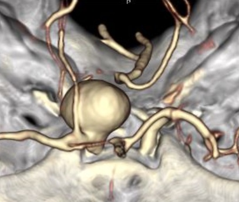

( of )
Correct: 0
Incorrect: 0
A 65 year old man reports that two days ago he developed sudden severe pain around his right brow. One day later, he noticed that the right upper lid suddenly drooped. When he lifted the lid, he had double vision. He has been healthy except for controlled systemic hypertension. His ophthalmologic and neurologic examinations are normal except for what you see in this video.
What is this?
Incorrect
Correct!
can also cause these abnormalities. If the aneurysm ruptures, which could happen within hours to days, it might cause death. Therefore, you must immediately order a brain study that visualizes the basal arteries, looking especially at the junction of the internal carotid and posterior communicating arteries, and the basilar and superior cerebellar arteries. CT and MR angiography both have at least a 95% chance of excluding aneurysms that compress the third nerve, but CT is more widely available, faster, and less subject to motion artefact. Caution: interpretation requires expertise, as imaging abnormalities are subtle! If the study visualizes the key areas and an expert has ruled out aneurysm, counsel arteriosclerotic risk factor control.

You are looking at complete right upper lid ptosis and impaired adduction, supraduction, and infraduction of the right eye. The pupils appear to be equal in size. The rest of the ophthalmologic and neurologic examinations is normal, so this is probably an isolated pupil-sparing right third nerve palsy. In this age group, the overwhelmingly likely cause is ischemia to the extra-axial (subarachnoid) portion of the nerve. Risk factors are those for arteriosclerosis. But a compressive lesion—most importantly an unruptured but expanding intracranial aneurysm—
Incorrect